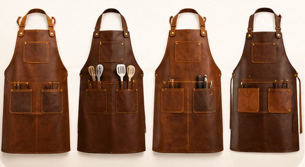
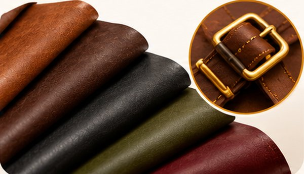
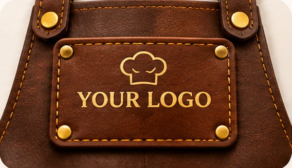
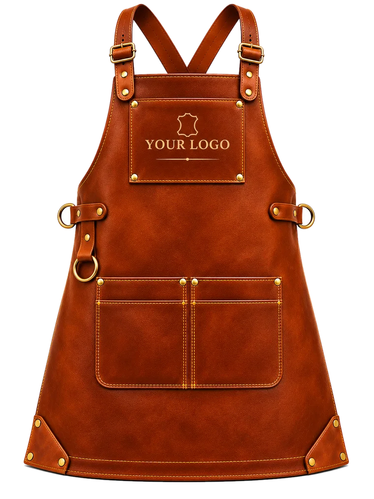
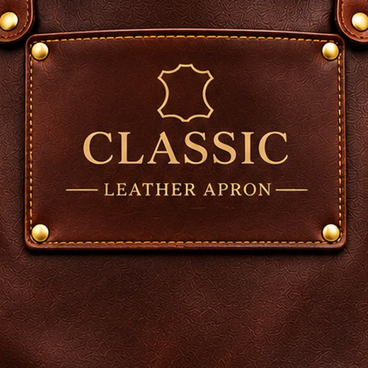
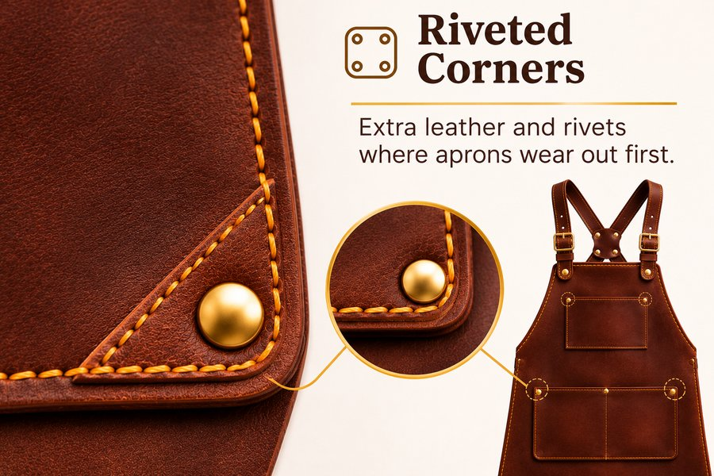

Full-Grain Leather
Hand-Stitched
1-Year Warranty
Free Shipping
Leather Aprons for Every Trade
Every craft has its tools. Every apron here is cut around them.


Featured Leather Aprons
One Apron. Five Colours. Yours.
Pick the shade that suits your space — every colour ages into something uniquely yours.


How to Customize Your Leather Apron
From idea to doorstep in four simple steps.
Choose your style
Chef, barber, workshop, artist, BBQ or our signature Classic — each cut around the tools of the trade.

Pick your leather
Choose your full-grain colour. Every apron gets solid brass hardware and waxed stitching as standard.

Add your logo or name
Upload a logo or type a name. We engrave it on the chest patch and send a proof first.

Handcrafted & shipped
Cut, stitched and finished by hand, then shipped free on orders over $99.


See Your Name in Leather
Type a name, initials or your business name and watch it appear on the chest patch — exactly where we'll engrave it.
Made to Last Years, Not Seasons
Canvas wears out. Leather wears in. We cut every apron from full-grain leather, stitch it with waxed thread, reinforce the corners with rivets and finish it in solid brass — because the details you never notice are the ones that decide how long an apron lasts.
Our Craftsmanship



Custom Logo Aprons for Your Whole Team
Restaurants, barbershops, cafés, breweries and workshops — give your team matching leather aprons that carry your brand on every shift and in every photo.
- Volume pricing for team orders
- Your logo engraved on every apron
- Proof sent before production
- Mix colours and styles in one order

The Last Apron You'll Ever Need to Buy
Cotton aprons stain. Canvas frays. A full-grain leather apron does the opposite: it gets stronger in character with every shift, every spill and every spark. That's why chefs, barbers, woodworkers and pitmasters have trusted leather for generations.
Ours are built around the way you actually work — cross-back straps that spare your neck, pockets where your hands reach for them, solid brass that won't rust, and riveted corners where aprons wear out first.
| Full-grain leather | Canvas | Cotton | |
|---|---|---|---|
| Resists spills & stains | Wipes clean | Partly | Absorbs |
| Handles heat & sparks | Excellent | Fair | Poor |
| Ages over time | Develops patina | Fades | Wears thin |
| Engraved logo | Yes | Print only | Print only |
Leather Apron FAQs
Everything you need to know about our aprons, engraving, fit and care. Can't find your answer?
Can I put my own logo on a leather apron?
Yes. Every apron has a riveted leather chest patch, and we engrave your logo, business name, initials or a short message on it for $15. Upload your artwork on the Design with AI page or send it with a custom order, and we'll share a proof before anything is engraved.
What kind of leather are your aprons made from?
Full-grain leather — the strongest, most natural layer of the hide. It resists spills and sparks, wipes clean, and develops a richer colour and softer feel the more you wear it. Every apron is finished with solid brass hardware and waxed stitching.
Will a leather apron fit me?
Our aprons use adjustable cross-back straps with solid brass buckles, so one size comfortably fits most adults. Cross-back straps rest on your shoulders rather than your neck, which makes them far more comfortable on long shifts.
Are leather aprons heavy or hot to wear?
A good leather apron feels substantial, not heavy — and because the cross-back straps spread the weight across your shoulders, most people forget they're wearing it within minutes. Leather also handles heat from grills, ovens and torches far better than cotton or canvas.
How do I clean and care for a leather apron?
Wipe it down with a damp cloth after use and let it air-dry away from direct heat. Every few months, rub in a little leather conditioner to keep it supple. Never machine-wash or tumble-dry leather.
Do you offer bulk or wholesale aprons for businesses?
Yes. Restaurants, barbershops, cafés, breweries and workshops get volume pricing, their logo engraved on every apron, and a proof before production. You can mix colours and styles in one order — just request a quote on our contact page.
Do leather aprons make good gifts?
They're one of the most personal gifts you can give a cook, barber, woodworker, artist or grill master. Add their name or initials to the chest patch and you have something they'll use for years.
How much does shipping cost?
Shipping is free on orders over $99, and we ship worldwide. Delivery times depend on your location and whether your apron is personalized — contact us for an estimate before you order.
See Your Apron Before It's Made
Describe your dream apron in plain words, try every colour and finish, and preview your logo on the chest patch — free, in seconds.